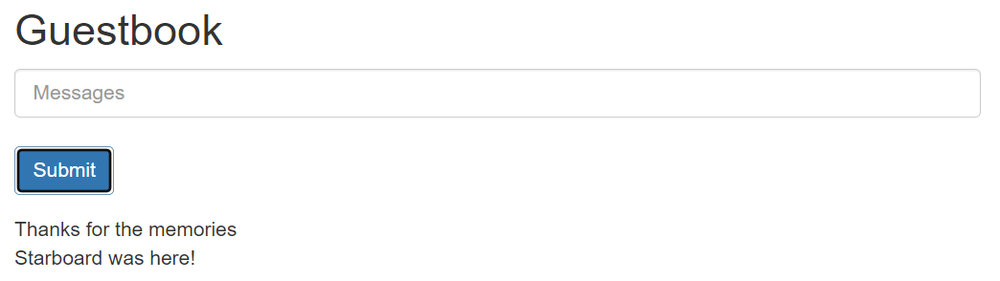

In this tutorial we will recreate the official Kubernetes Guestbook example. The example deploys a Redis cluster with a master node and 3 replicas. A PHP web application makes use of the Redis cluster to allow a guest to leave a note.
The official example does not currently work if you run it as is but don't worry. We will make adjustments to make sure our deployment runs as expected.
This tutorial will also start to show the power of using a programming language over static configuration.
Visual Studio Code with the Ionide is a great choice. See Setup your environment for more details.
In the Hello World tutorial you nested in-line the config. Here we will be defining each resource and assign it to a variable. We then build up our Deployment using the variables rather than in-lining the config.
First off, import the Overboard package and import the namespaces we need.
guestbook.fsx#r directive to import the Overboard package and open up the namespaces#r "nuget:Overboard"
// open the required namespaces
open System
open Overboard
open Overboard.Common
open Overboard.Workload
open Overboard.Service
The we are going to create our first function. This function, redisDeployment will return the Deployment resource configuration.
A F# function is just a value, so we use the let keyword to assign the value.
Tip: Start with defining your configuration with hard-coded values, then pull our parameters to pass in as arguments as needed.
/// Return a Redis Kubernetes Deployment Resource Config
let redisDeployment redisName role replicaCount portNumber =
// which image depends on the role
let redisImage = if role = "leader" then "docker.io/redis:6.0.5" else "gcr.io/google_samples/gb-redis-follower:v2"
// define the container
let redisContainer = container {
name redisName
image redisImage
containerPort {
port portNumber
}
}
// build up the list of labels
let labels = [
("app", "redis")
("role", role)
("tier", "backend")
]
// the pod to use for podTemplate
let redisPod = pod {
_labels labels
add_container redisContainer
}
// define the deployment using the same labels used for the pod in the matchLabels
let redisDeployment = deployment {
_name redisName
replicas replicaCount
add_matchLabels labels
podTemplate redisPod
}
// return the deployment config
redisDeployment
So now we have a function that can return the config for both our master and replica Redis deployments.
Next we need to have a Service to match up to a Deployment. This Service will proxy the traffic to the Redis pods provisioned through the Deployment.empty
We do this the same way as with the Deployment. With a function called redisService.
/// Return a Redis Kubernetes Service Resource Config
let redisService serviceName role portNumber =
// list the labels
let labels = [
("app", "redis")
("role", role)
("tier", "backend")
]
// configure the port
let port = servicePort {
port portNumber
targetPortInt portNumber
}
// put it together in a Service config
let redisService = service {
_name serviceName
_labels labels
add_port port
matchLabels labels
}
// return the config
redisService
This function will provide the Service config when passed the parameters for the service. We can use this for defining a Service for both the master and replica Redis Deployments.
The last piece of the puzzle is the web application. The image we are pulling in is of a PHP application but Kubernetes doesn't really care what it is. We just define the image used by the container in the Pod.
So we define a general function for returning the config for a Deployment of an application and the Service to make it available.
/// Return a Deployment and Service for a frontend application connected to Redis
let frontendApp appName imageName replicaCount portName portNumber=
// pass back a K8s config type (contains both Deployment and Service)
k8s {
// add deployment to K8s config
deployment {
_name appName
replicas replicaCount
labelSelector {
matchLabels [
("app", appName)
("tier", "frontend")
]
}
pod {
_labels [
("app", appName)
("tier", "frontend")
]
container {
appName
image imageName
add_port (containerPort {
name portName
port portNumber
})
cpuRequest 100<m>
memoryRequest 100<Mi>
// environment variables instructing how to find Redis cluster
envVar {
name "GET_HOSTS_FROM"
value "dns"
}
}
}
}
// add service to K8s config
service {
_name appName
_labels [
("app", appName)
("tier", "frontend")
]
add_port (servicePort {
port portNumber
targetPortString portName
})
matchLabels [
("app", appName)
("tier", "frontend")
]
typeOf NodePort
}
} // F# returns the last expression of a function. Since the k8s definition is a single expression, it is returned.
In the above function we used a different style to the previous 2. We defined the configuration in a single expression without assigning labels and pods to intermediate variables. Which style you use is up to you and might depend on the complexity of the configuration or you might chose variables for reuse (eg. labels are a common candidate).
Now that we have our functions, we need the values we will be passing into them.
// Capture our values for the Redis and App config
// Redis settings
let leaderName = "redis-leader"
let leaderRole = "leader"
let leaderReplicaCount = 1
let followerName = "redis-follower"
let followerRole = "follower"
let followerReplicaCount = 2
let redisPortNumber = 6379
// Guestbook settings
let guestbookAppName = "guestbook"
let guestbookAppImage = "gcr.io/google-samples/gb-frontend:v5"
let guestbookReplicas = 3
let guestBookPortName = "http-server"
let guestBookPortNumber = 80
Now we put together our final Kubernetes configuration by generating the config by calling the functions we created above. We compose them in a k8s builder to build up our final configuration.
// build up the config by calling the functions
let k8sConfig = k8s {
// Redis master deployments and service
redisDeployment leaderName leaderRole leaderReplicaCount redisPortNumber
redisService leaderName leaderRole redisPortNumber
// Redis replica deployment and service
redisDeployment followerName followerRole followerReplicaCount redisPortNumber
redisService followerName followerRole redisPortNumber
// Guestbook app (combines that K8s instance with the current one)
frontendApp guestbookAppName guestbookAppImage guestbookReplicas guestBookPortName guestBookPortNumber
}
We use KubeCtlWriter to write a YAML (or JSON if you prefer) file that we can use to deploy our configuration to Kubernetes.
Tip:
__SOURCE_DIRECTORY__contains a string to the directory the that the script file is running in.
// write the file
KubeCtlWriter.toYamlFile k8sConfig $"{ __SOURCE_DIRECTORY__}{IO.Path.DirectorySeparatorChar}guestbook.yaml"
Test out the configuration you have created by applying it to your Kubernetes cluster.
|
You should see something similar to this:
|
To test out the application, open up a port to 80, where the guestbook application is running.
|
81 is the port you can access the app on your side. You can choose a port you prefer here.
Navigate to localhost:81 and you should see the application.

Go ahead and leave a note.
In this tutorial we defined a more complicated configuration than hello-world.